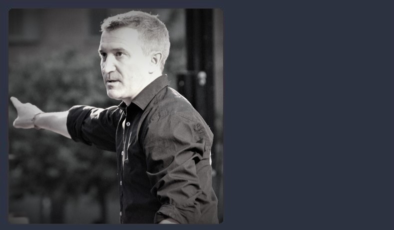

Tons i Sons
La Coral
Tons i Sons va néixer l'any 2003, arran d'una trobada d'amics a qui unia una mateixa afició: cantar. Després d'una xerrada engrescadora, va sorgir la idea de de fer un grup coral de música gospel, inexistent fins aleshores a la ciutat de Terrassa.
Fa més de 15 anys que la nostra coral va començar el seu camí amb els assajos setmanals, els primers concerts, els nous temes que anaven engreixant el repertori, cares noves que s'afegien al projecte... un bon grapat de persones que durant tots aquests anys han anat passant per la coral i que totes, sense excepció, hi han deixat la seva empremta i ens han fet créixer.
Actualment Tons i Sons està formada per una quarentena de cantaires, i compta amb un combo musical format per bateria, piano, guitarres i baix elèctric. El director i fundador de la coral és Carles Massó, i el director musical, pianista i arranjador és Genís Sobrado.
L'any 2013 vam participar a la primera edició del programa televisiu Oh Happy Day!, on vam aconseguir arribar a ser semi-finalistes.
Al llarg de la seva història Tons i Sons ja ha fet prop de 200 concerts, per multitud de municipis de Catalunya i també algun de França. I us podem assegurar que, a data d'avui, mantenim el mateix entusiasme que a l'inici i tenim tota l'energia per seguir fent moltíssims més concerts!
Components de la coral


Direcció musical
Carles Massó
Director i fundador
 Genís Sobrado
Genís Sobrado
Director musical, pianista i arranjador
La banda

Roberto Nortes (baix elèctric), Marc Corominas (bateria), Pepo Figueras (guitarra), Genís Sobrado (teclat, guitarra i veu).